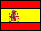
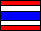
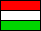
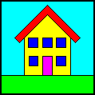

Natuurkundige Java Applets
Auteur: Walter Fendt
Nederlandse bewerking: Teun Koops, Henk Russeler
|
|
Natuurkundige Java AppletsAuteur: Walter Fendt
Nederlandse bewerking: Teun Koops, Henk Russeler
|
Nederlandse versie
 |
(Java 1.4, 50 applets, 2007-04-19)
(Java 1.1, 38 applets, 2003-01-14)
|
Download
|
 |
 |
 |
 |  |
 |
|
 |
 |
 |
 | |||
|  |  |
| Download: Sun Microsystems JRE (Java Runtime Environment) |
| Mechanica |
| Eenparig versnelde beweging | 11.2.2000 - 11.3.2006 |
| Evenwicht | 11.3.2000 - 24.1.2003 |
| Krachtsresultante (Optellen van vectoren) | 2.11.1998 - 24.1.2003 |
| Ontbinden van vectoren / krachten | 30.5.2003 - 11.3.2006 |
| Katrollen | 24.3.1998 - 24.1.2003 |
| Hefboom principe | 2.11.1997 - 24.1.2003 |
| Hellend vlak | 24.2.1999 - 24.1.2003 |
| Tweede wet van Newton | 23.12.1997 - 24.1.2003 |
| Schuine worp | 13.9.2000 - 24.1.2003 |
| Elastische en onelastische botsing | 7.11.1998 - 24.1.2003 |
| "Newton's wieg" | 4.11.1997 - 24.1.2003 |
| Cirkelbeweging met constante hoeksnelheid | 25.3.2007 - 19.4.2007 |
| Carousel (centripetale kracht) | 10.3.1999 - 24.1.2003 |
| Eerste wet van Kepler | 25.3.2000 - 24.1.2003 |
| Tweede wet van Kepler | 4.4.2000 - 24.1.2003 |
| Vloeistofdruk | 3.2.1999 - 24.1.2003 |
| Opwaartse kracht in vloeistoffen | 19.4.1998 - 24.1.2003 |
| Trillingen en golven |
| Slinger | 21.5.1998 - 24.1.2003 |
| Trillende veer | 24.5.1998 - 24.1.2003 |
| Gekoppelde slinger | 5.7.1998 - 24.1.2003 |
| Resonantie | 9.9.1998 - 24.1.2003 |
| Zweving | 21.10.2001 - 11.3.2006 |
| Staande golf (Verklaard d.m.v. superpositie met de teruggekaatste golf) | 9.7.2003 - 11.3.2006 |
| Staande longitudinale golven | 8.6.1998 - 24.1.2003 |
| Interferentie van twee golven | 22.5.1999 - 24.1.2003 |
| Doppler effect | 25.2.1998 - 24.1.2003 |
| Electrodynamica |
| Magnetisch veld van een staafmagneet | 20.4.2001 - 11.3.2006 |
| Magneetveld rond stroomdraad | 18.9.2000 - 24.1.2003 |
| Lorentzkracht | 1.6.1998 - 24.1.2003 |
| Gelijkstroommotor | 29.11.1997 - 24.1.2003 |
| Generator | 8.5.1998 - 24.1.2003 |
| Wet van Ohm | 23.11.1997 - 24.1.2003 |
| Combinaties van weerstanden | 11.9.2002 - 11.3.2006 |
| Potentiometer | 16.2.2006 - 11.3.2006 |
| Brug van Wheatstone | 11.2.2006 - 16.3.2006 |
| Eenvoudige wisselstroomschakeling | 13.6.1998 - 24.1.2003 |
| Combinaties of weerstanden, spoelen en condensatoren | 19.3.2004 - 11.3.2006 |
| LC-kring (electromagnetische oscillatie) | 23.10.1999 - 24.1.2003 |
| Electromagnetische golven | 20.9.1999 - 24.1.2003 |
| Optica |
| Breking van lichtstralen | 20.12.1997 - 24.1.2003 |
| Reflectie and refractie van golven (principe van Huygens) | 5.3.1998 - 24.1.2003 |
| Astronomische (lenzen) telescoop | 8.3.2000 - 24.1.2003 |
| Interferentie van licht bij een dubbele spleet | 7.10.2003 - 11.3.2006 |
| Interferentie van licht bij een enkele spleet | 11.10.2003 - 17.3.2006 |
| Thermodynamica |
| Speciale processen in een ideaal gas | 25.12.1999 - 24.1.2003 |
| Relativiteitstheorie |
| Tijdrek | 15.11.1997 - 24.1.2003 |
| Atoomfysica |
| Foto-electrisch effect | 20.2.2000 - 24.1.2003 |
| Bohr's theorie van het waterstofatoom | 30.5.1999 - 24.1.2003 |
| Kernfysica |
| Radioactief verval (series) | 20.7.1998 - 24.1.2003 |
| Vervalwet | 16.7.1998 - 24.1.2003 |
 |
 |
 | |
| Mathematik-Applets | Astronomie-Applets | Homepage |
| Copyright |
| Awards, Links |